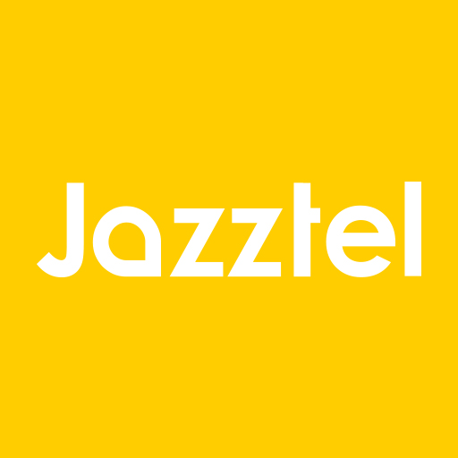
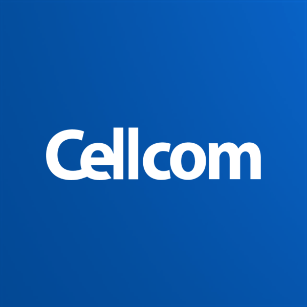
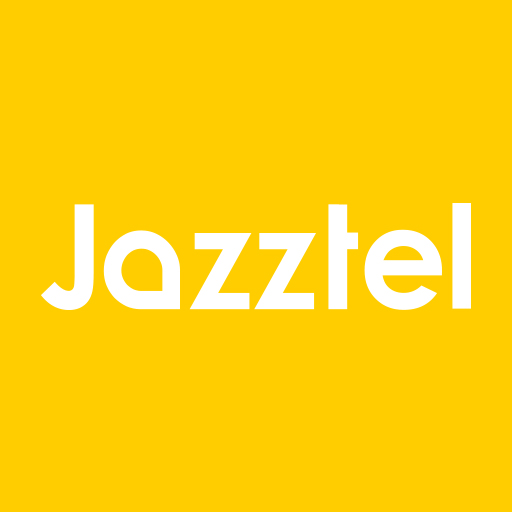
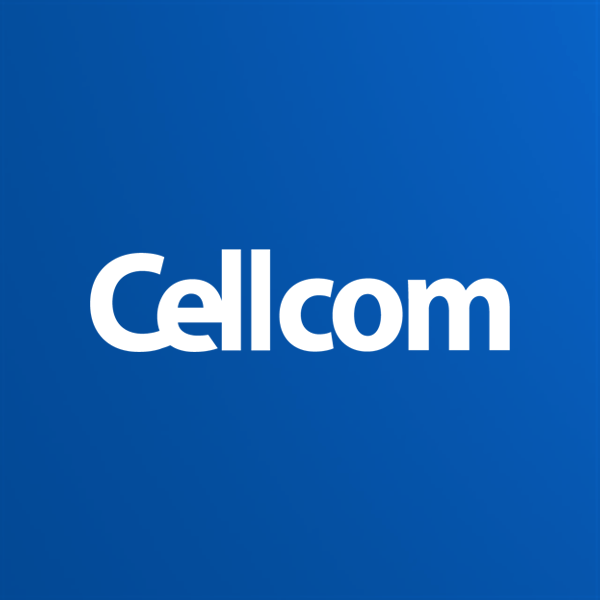

{kind=link}
Ce n’est qu’après le rachat d’ « Orange PLC » (anciennement Microtel, un opérateur mobile britannique) à Vodafone en Août 2000 que France Télécom devient « Orange SA. », et toutes leurs précédentes marques se voient remplacées en Juin 2001. C’est dans cette brève période que France Télécom – Orange devint le quatrième opérateur mondial de par sa taille.
 



Depuis le 1er Juin 2006, France Télécom commence à commercialiser l’intégralité de ses produits sous le nom « Orange », même à l’international (hormis la Pologne et en Belgique)
En Février 2012, toutes associations à la marque France Télécom passent à Orange, y comprit : sites, lignes et services
Le passage à Orange fut voté et concrétisé en 2013.
Durant la période qui suit, Orange se voit racheter quelques compagnies telles que :
-Jazztel, opérateur internet espagnol en Septembre 2014
-Acquisition partielle de CellCom Libéra et Airtel Burkina/Sierra en Janvier 2016, l’acquisition totale se fera en Juin-Juillet 2016.
-Rachat de 65 % de Groupama Bank en Avril 2016